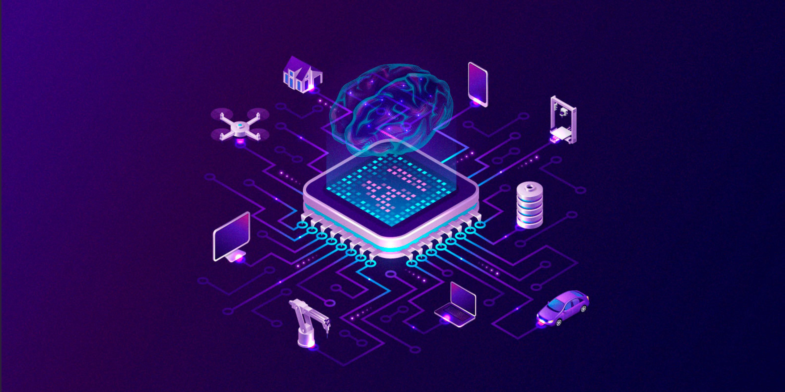

☰
Internet das coisas
IA nas empresas
Surgimento
Inteligência Artificial
Página inicial

Aplicação da inteligência artificial nas empresas
A inserção da inteligência artificial nas empresas e nas atividades corporativas pode parecer, para algumas pessoas, uma ideia futurista. Mas a verdade é que o futuro é o que estamos vivendo hoje, a questão é que está tudo acontecendo em uma incrível velocidade.
Acompanhar todo esse desenvolvimento ainda é um grande desafio para gestores, porém, é essencial abrir os olhos para a repercussão que todas essas mudanças provocam.
A transformação digital, de forma geral, trouxe as novas tecnologias e com elas a possibilidade do uso de softwares que coordenam diversas etapas do trabalho. Esse aspecto deve ser encarado como uma forma de maximizar resultados, e não de substituição da mão de obra humana pelas máquinas.
Estima-se que a inteligência artificial nas empresas será responsável por um aumento de 40% da produtividade nos próximos quinze anos, sendo assim uma ferramenta indispensável para quem busca um crescimento compatível com o mercado.
As perspectivas são de que muitas coisas novas vão surgir durante esse trajeto, e que constantemente o mercado deverá se adaptar às novidades. Mas com base no que já temos hoje, é possível fazer uma análise do impacto da inteligência artificial nas empresas nos últimos anos.
Vejamos um pouco mais sobre alguns dos setores e operações que mudaram com a inserção da IA, além de serviços que só são possíveis com essa tecnologia:
Assistentes virtuais
As assistentes virtuais são aliadas de muitos escritórios, que conseguem fazer reconhecimento de voz, entender demandas e realizar comandos. Essa característica demonstra um potencial de produtividade muito forte, visto que podem marcar reuniões, fazer ligações, organizar eventos em agendas virtuais, fazer pesquisas, entre outras atividades.
Esse modelo evidencia o caráter cada vez mais tecnológico da sociedade moderna, substituindo, por exemplo, as tradicionais agendas impressas.
Satisfação de colaboradores
A pesquisa de satisfação de colaboradores é um método tradicional para avaliar o quanto os profissionais de uma empresa estão realmente felizes por trabalharem nela.
A inteligência artificial nas empresas permite ampliar o alcance dessa análise, fazendo um monitoramento constante da percepção dos funcionários.
As soluções de IA acompanham os profissionais e ajudam a identificar, através dos dados comportamentais, sinais de insatisfação. Dessa forma, o departamento de Recursos Humanos pode trabalhar em cima deles, direcionando a medida que mais se encaixe na solução do problema.
Segurança
A inteligência artificial nas empresas também pode ser usada como um incrível mecanismo de segurança. Neste contexto, podemos considerar ataques cibernéticos e até mesmo a proteção do ambiente físico da organização.
O serviço de IA é capaz de identificar tentativas de ataques virtuais com rapidez, evitando que dados sigilosos da empresa sejam expostos a terceiros. As câmeras de segurança, por sua vez, são equipadas com reconhecimento facial, permitindo a identificação de criminosos captados na imagem.
Integração entre equipes
A inteligência artificial nas empresas atua também como uma eficiente ferramenta de gestão de equipes, principalmente através de plataformas e softwares de trabalho colaborativo.
Ela conecta dados, facilitando a troca de informações entre setores. Assim, as tarefas são executadas com mais precisão, permitindo ainda que os líderes acompanhem todo processo e possam identificar quais profissionais estão atuando mais diretamente em cada projeto.
Recrutamento e seleção
Os processos seletivos sempre exigem muita dedicação da equipe de RH. Mas com a inteligência artificial nas empresas, esse processo ganhou uma ajuda extra muito valiosa.
Ela vem sendo considerada, inclusive, como a chave para mudança dos processos de recrutamento.
Isso porque através dela, a opinião do recrutador não interfere tanto no processo, permitindo uma escolha mais condizente com o fit cultural da empresa.
Mais do que isso, essa tecnologia permite que a empresa esteja preparada para lidar com um alto volume de currículos, destacando entre eles, aqueles que mais evidenciam as habilidades e competências necessárias para a vaga divulgada.
Consequentemente, é possível contratar o melhor candidato em menos tempo, sem atrasos nas etapas do processo seletivo.